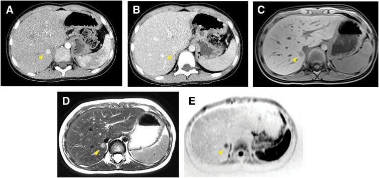
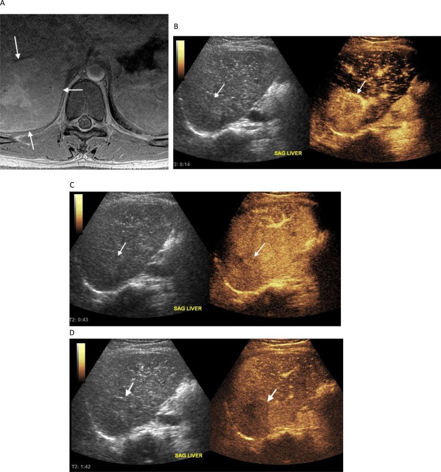

1793 — Nốt FNH-like ở trẻ sau hóa trị hoặc ghép tế bào gốc: "di căn giả" của người sống sót ung thư nhi / Paediatric FNH-like lesions after chemotherapy or HSCT
Tags: pattern:not-gan pattern:nhieu-o pattern:ngam-dong-mach pattern:gia-di-can pattern:gan-lanh-tinh vung:gan vung:gan-mat protocol:MRI-gan protocol:MRI-gan-DWI protocol:CEUS score:RECIST-1.1 incidentaloma:not-gan
Mức chắc chắn (certainty): tổng hợp y văn (literature synthesis) — số liệu đọc từ toàn văn bài mở: 16 trẻ sau hóa trị (Diagnostic and Interventional Radiology 2020, PMID 32490830 — chỉ dùng số liệu, không lấy ảnh), CEUS ở 68 bệnh nhân ung thư nhi (Cancer Imaging 2024, PMC11360734, CC BY 4.0), ca FNH giả di căn Wilms (Surgical Case Reports 2026, PMC13148888, CC BY 4.0), ca FNH-like bẩm sinh giả u nguyên bào gan (World J Pediatr Surg 2025, PMC12004462, CC BY-NC 4.0), chuỗi 17 ca sau ghép tế bào gốc (Bone Marrow Transplant 2015, PMID 25581411) và bài người lớn của repo (bài 1733). Ca nguyên văn giữ đúng chú thích gốc.
1. Tổng quan bệnh học – cơ chế hình ảnh
- Vấn đề thực hành: trẻ đã điều trị u nguyên bào thần kinh, Wilms, medulloblastoma hoặc đã ghép tế bào gốc, đang theo dõi định kỳ, bỗng có nốt gan mới. Phản xạ "nốt mới = tái phát/di căn" dẫn tới sinh thiết, cắt gan, đổi phác đồ — trong khi phần lớn là nốt tăng sản lành tính kiểu FNH (FNH-like lesion).
- Vì sao trẻ có nốt này (cơ chế mạch máu):
- Hóa chất gây độc nội mô xoang gan — oxaliplatin, cyclophosphamide, busulfan, và xạ toàn thân (TBI) ở ghép tế bào gốc — làm tổn thương tế bào nội mô xoang, huyết khối vi mạch, giảm tưới máu từng vùng.
- Vùng giảm tưới máu teo lại, vùng lân cận tăng tưới máu bù → tăng sản tế bào gan thành nốt. Nốt một tiểu thùy = tăng sản nốt tái tạo (NRH); nốt nhiều tiểu thùy = FNH-like.
- Vì là tế bào gan bình thường, không có đột biến sinh ung, nốt có thể to lên và sinh thêm theo thời gian nhưng không di căn.
- TẠI SAO "thì gan mật" là trọng tài (vật lý + mô học): thuốc cản quang gan mật (gadoxetate disodium, gadobenate dimeglumine) bị tế bào gan bắt qua OATP1B1/1B3 rồi thải vào đường mật qua MRP2. Ở thì gan mật (hepatobiliary phase, HBP) — 15–20 phút với gadoxetate (0,025 mmol/kg), 60–120 phút với gadobenate (0,1 mmol/kg) — gan bình thường sáng, còn mô không có tế bào gan (di căn, u nguyên bào gan) tối. FNH-like có tế bào gan → tăng tín hiệu (11/16) hoặc đồng tín hiệu (5/16), gần như không bao giờ giảm tín hiệu toàn bộ.
- Số liệu định lượng:
- Tần suất: FNH chỉ chiếm ~2% u gan ở trẻ; nhưng ở trẻ sống sót ung thư, tổn thương gan khu trú gặp ở 17% (46/273) trẻ điều trị u đặc, xuất hiện ≥ 2 năm sau chẩn đoán (Smith, dẫn trong PMC11360734).
- Loạt 16 trẻ sau hóa trị (PMC7360070): 13/16 nhiều nốt, 3/16 một nốt; khoảng cách 2–14 năm từ chẩn đoán ung thư đến lúc phát hiện nốt; đường kính nốt lớn nhất trung vị 19,5 mm (8–41 mm); HBP tăng tín hiệu 11, đồng tín hiệu 5; 4 trẻ tăng số lượng và kích thước, mỗi nốt to thêm 6–15 mm.
- Sau ghép tế bào gốc (17 ca, PMC25581411): nguy cơ tăng khi tuổi lúc ghép ≤ 12 (HR 9,10), GVHD mạn (HR 2,99), liệu pháp hormone (HR 4,02), xạ ổ bụng (HR 4,37); 9/12 trẻ đo FibroScan có xơ gan → cần theo dõi suốt đời.
- CEUS trong ung thư nhi (68 bệnh nhân, 68 tổn thương: 59 lành/87%, 9 ác/13%): độ nhạy 83–100%, độ đặc hiệu 93,1–96,0%, NPV 98,0–100%, độ chính xác 93,8–94,6%.
- Sẹo trung tâm chỉ có ở 35% FNH < 3 cm → thiếu sẹo không loại trừ.
- Vì sao trẻ khác người lớn: nốt xuất hiện sớm hơn so với tuổi (có ca bẩm sinh), nhiều ổ hơn, và bối cảnh ung thư nhi khiến bác sĩ không dám theo dõi — chính là chỗ sai.
2. Mẫu hình + chẩn đoán phân biệt theo bối cảnh (Gamut)
- Khuôn 1 — Trẻ sống sót u đặc, nốt gan MỚI nhỏ (8–20 mm), nhiều ổ, ≥ 2 năm sau điều trị. Gamut: FNH-like vs di căn (u nguyên bào thần kinh, Wilms) vs NRH vs u máu. Chốt: HBP tăng/đồng tín hiệu + không washout + không tăng AFP/catecholamine.
- Khuôn 2 — Trẻ sau GHÉP TẾ BÀO GỐC, nhiều nốt gan + lách to + giảm tiểu cầu. Gamut: FNH-like/NRH sau HSCT vs di căn vs nhiễm nấm (candida microabscess) vs bệnh gan do GVHD. Chốt: HBP + bối cảnh + không sốt.
- Khuôn 3 — Sơ sinh/trẻ < 6 tháng, khối gan đơn độc, AFP cao. Gamut: FNH-like bẩm sinh vs u nguyên bào gan thể thai vs u máu. Chốt: AFP so với tuổi (sơ sinh bình thường tới 50.000 ng/mL), MRI gan mật, và sinh thiết có hội chẩn mô bệnh nhi.
- Khuôn 4 — Nốt to lên khi theo dõi. Gamut: FNH-like đang tăng sản vs di căn tiến triển vs u nguyên bào gan. Chốt: HBP vẫn tăng/đồng + không washout mới; kích thước một mình không phải tiêu chuẩn ác.
- Khuôn 5 — Nhiều nốt + gan to + suy gan cấp ở trẻ đang điều trị. Gamut: thâm nhiễm u nguyên bào thần kinh (pepper syndrome) vs FNH-like vs viêm gan do thuốc. Chốt: bệnh cảnh cấp + catecholamine niệu + hạch/tủy → không phải FNH-like.
- Gợi nhớ FNH-like: F — Follow-up dài (2–14 năm sau điều trị) · N — Nhiều nốt, Nhỏ · H — HBP tăng/đồng tín hiệu · L — Lành, Lớn lên vẫn lành.
3. Bảng so sánh phân biệt (ma trận đối chiếu)
| Thực thể (entity) | Hình ảnh điển hình | Chốt vào (rule-in) | Chốt loại (rule-out) | Gợi ý xác nhận |
|---|---|---|---|---|
| FNH-like sau điều trị (bài này) | Nốt 8–20 mm, nhiều ổ; ngấm mạnh thì động mạch; không washout; HBP tăng 11/16 hoặc đồng 5/16; sẹo trung tâm chỉ 35% khi < 3 cm | Tiền sử hóa trị/HSCT + nhiều nốt nhỏ + HBP tăng/đồng + AFP và catecholamine bình thường | HBP giảm tín hiệu toàn bộ + washout + AFP tăng → không phải FNH-like | MRI gan mật; theo dõi 3–6 tháng; sinh thiết chỉ khi không điển hình |
| Di căn u nguyên bào thần kinh | Gan to, nhiều nốt/ thâm nhiễm lan tỏa ("pepper syndrome"), có thể vôi hóa; thường kèm hạch/tủy | Bệnh cảnh đang điều trị + catecholamine niệu tăng + tủy xương dương | Nốt nhỏ rời rạc, HBP tăng, bệnh ổn định nhiều năm → không phải di căn | MIBG/¹⁸F-DOPA, catecholamine, tủy đồ |
| Di căn Wilms | Nốt gan giảm tỷ trọng, thường kèm di căn phổi; xuất hiện trong đợt điều trị | U Wilms tiến triển + nốt gan mới cùng đợt + di căn phổi | Nốt đơn độc, HBP tăng/đồng, xuất hiện nhiều năm sau → nghĩ FNH | CT ngực, siêu âm/MRI gan, theo dõi |
| U nguyên bào gan (hepatoblastoma) | Trẻ < 3 tuổi, khối lớn, không đồng nhất, có thể vôi hóa, ngấm mạnh thì động mạch, HBP giảm tín hiệu | AFP tăng theo tuổi + khối lớn + HBP giảm | AFP trong ngưỡng tuổi + nốt nhỏ + HBP tăng → không phải HBL | AFP, MRI gan mật, sinh thiết có hội chẩn |
| FNH-like bẩm sinh | Khối đa cung (polylobate) 30 × 28 mm, T2 tăng không đồng nhất, T1 giảm nhẹ; HBP tăng; có thể giống u nguyên bào gan thể thai | Sơ sinh + AFP trong ngưỡng tuổi + khối đa cung + HBP tăng | AFP tăng rất cao + HBP giảm → nghĩ HBL | MRI gan mật; sinh thiết + hội chẩn mô bệnh nhi trước khi cắt |
| NRH sau HSCT | Nốt ≤ 3 mm rất nhiều, lưới giảm tín hiệu trên HBP, lách to, giảm tiểu cầu | Sau HSCT + nốt nhỏ + lưới HBP + giảm tiểu cầu | Nốt > 5 mm có viền và washout → không phải NRH đơn thuần | MRI HBP, đếm tiểu cầu, FibroScan |
| U máu / u mạch máu | T2 rất sáng, ngấm viền ngoại vi rồi đầy dần; HBP giảm tín hiệu | Ngấm ngoại vi – trung tâm theo thì + T2 rất sáng | Ngấm đồng nhất ngay thì động mạch + HBP tăng → không phải u máu | Siêu âm, MRI; không sinh thiết |
| Adenoma | Nốt đồng nhất, ngấm mạnh, có thể xuất huyết; HBP giảm hoặc đồng | Nốt đơn độc lớn, HBP giảm, bối cảnh glycogenosis/AND | Nhiều nốt nhỏ sau hóa trị + HBP tăng → không phải adenoma | MRI gan mật; theo dõi |

Bé gái 5 tuổi, u Wilms giai đoạn IV đã lui bệnh; nốt 10 mm phân thùy I: (A) CT thì động mạch tăng đậm độ, (B) thì cân bằng giữ thuốc, đồng tỷ trọng, (C) T1 giảm tín hiệu, (D) T2 tăng tín hiệu, (E) DWI hạn chế khuếch tán. Cắt gan ổ I: FNH 10 × 8 mm có sẹo trung tâm. Nguồn: Miyoshino W và cs., Surg Case Rep 2026, Fig. 2 (CC BY 4.0).Ba dấu hiệu quyết định "lành hay tái phát"
- Thì gan mật: 11/16 tăng, 5/16 đồng — không ca nào giảm tín hiệu toàn bộ; di căn/u nguyên bào gan giảm tín hiệu.
- Không washout: FNH-like giữ thuốc ở thì cửa/muộn (như ca A→B ở hình trên); washout mới xuất hiện là dấu hiệu đáng lo.
- Xét nghiệm nền: AFP theo tuổi và catecholamine niệu bình thường là chốt loại mạnh trong bối cảnh ung thư nhi.
4. Protocol chụp + theo dõi
- Bước 1 — siêu âm (không bức xạ, không an thần): đo kích thước, số nốt, echo; nếu nốt mới ở trẻ đã điều trị ung thư → CEUS nếu có kinh nghiệm (độ chính xác 93,8–94,6%, NPV 98–100%).
- Bước 2 — MRI gan có cản quang gan mật (chuẩn khẳng định): T1 in/out phase, T2 fat-sat, DWI b = 0/800 + ADC, động mạch – cửa – muộn, HBP 15–20 phút (gadoxetate) hoặc 60–120 phút (gadobenate). Lát 4 mm.
- Bước 3 — xét nghiệm: AFP so với ngưỡng tuổi (sơ sinh tới 50.000 ng/mL là bình thường), catecholamine niệu, chức năng gan, đếm tiểu cầu (nếu sau HSCT).
- Theo dõi (đề xuất thực hành, chưa có guideline riêng cho trẻ):
- Nốt điển hình (ngấm mạnh, không washout, HBP tăng/đồng): MRI 3–6 tháng/lần trong năm đầu, sau đó 6–12 tháng; không sinh thiết, không áp RECIST cho tổn thương lành.
- Nốt to lên mà HBP vẫn tăng/đồng → tiếp tục theo dõi (4/16 trẻ to thêm 6–15 mm, vẫn lành).
- Sinh thiết/cắt chỉ khi: HBP giảm tín hiệu toàn bộ, washout mới, AFP/catecholamine tăng, hoặc khối > 3–5 cm gây triệu chứng.
- Sau ghép tế bào gốc: theo dõi suốt đời vì FNH có thể xuất hiện nhiều năm sau và 9/12 trẻ có xơ gan trên FibroScan.
flowchart TD
A["Trẻ sống sót ung thư: nốt gan MỚI"] --> B{"Có AFP tăng theo tuổi hoặc catecholamine tăng?"}
B -- "Có" --> C["Coi là tái phát/di căn: CT ngực, MIBG, sinh thiết theo phác đồ"]
B -- "Không" --> D{"Siêu âm: bao nhiêu nốt, kích thước?"}
D -- "Một nốt lớn hơn 3 cm" --> E["MRI gan mật + AFP + hội chẩn"]
D -- "Nhiều nốt 8-20 mm" --> E
E --> F{"Thì gan mật tăng hoặc đồng tín hiệu?"}
F -- "Có" --> G{"Có washout hoặc AFP tăng?"}
G -- "Không" --> H["FNH-like: theo dõi MRI 3-6 tháng, KHÔNG sinh thiết"]
G -- "Có" --> I["Sinh thiết / hội chẩn ung thư nhi"]
F -- "Không, giảm tín hiệu toàn bộ" --> I
H --> J{"Nốt to lên khi theo dõi?"}
J -- "Có nhưng HBP vẫn tăng" --> K["Tiếp tục theo dõi: 4/16 trẻ có nốt to thêm 6-15 mm"]
J -- "Có kèm HBP giảm hoặc washout mới" --> I
5. Biến thể bình thường và cạm bẫy
- Cạm bẫy 1 — DWI hạn chế khuếch tán vẫn là FNH. Ca nguyên văn Wilms: nốt hạn chế khuếch tán rõ trên DWI mà mô bệnh là FNH; DWI ở nốt nhỏ không đủ phân biệt, phải dựa vào HBP + diễn tiến.
- Cạm bẫy 2 — CEUS "washout" vẫn là FNH. Ca 18 tuổi sau medulloblastoma: tăng mạnh 14 giây, rồi giảm tín hiệu ở 43 giây và 1 phút 42 — kiểu giống ác tính, nhưng mô bệnh FNH. Đừng chốt ác chỉ vì một pha CEUS.
- Cạm bẫy 3 — "To lên = tái phát". 4/16 trẻ có nốt to thêm 6–15 mm và tăng số nốt mà vẫn lành; luôn đọc lại HBP trước khi đổi chẩn đoán.
- Cạm bẫy 4 — HBP đồng tín hiệu. 5/16 nốt chỉ đồng tín hiệu, không tăng; đồng tín hiệu vẫn loại trừ di căn (di căn giảm tín hiệu), nhưng dễ bị bỏ qua nếu chỉ tìm "nốt sáng".
- Cạm bẫy 5 — Sơ sinh có AFP "cao" là bình thường. AFP 46.758 ng/mL ở trẻ 3 ngày tuổi vẫn trong ngưỡng (25.000–50.000); đọc AFP mà không theo tuổi dẫn tới mổ oan u nguyên bào gan thể thai — đúng ca FNH-like bẩm sinh đã bị cắt gan phải.
- Cạm bẫy 6 — Mô bệnh nhi cũng có thể nhầm. Ca bẩm sinh trên có glypican-3+, β-catenin dương màng, glutamine synthetase+ và bị đọc là u nguyên bào gan thể thai ở lần đầu; cần hội chẩn mô bệnh trung tâm trước phẫu thuật lớn.
- Cạm bẫy 7 — Bỏ sót bệnh mạch nền. Nốt FNH-like sau HSCT thường đi kèm lưới HBP giảm tín hiệu, lách to, giảm tiểu cầu, xơ gan trên FibroScan (9/12) — đọc các dấu này để không bỏ PSVD/tăng áp cửa (bài 1910, 1792).
6. Tự lượng giá — Blind Quiz
Ca 1 — Bé gái 5 tuổi, u Wilms giai đoạn IV, lui bệnh 2 năm. Siêu âm theo dõi thấy nốt 10 mm gan phải. Đọc 5 chuỗi xung và quyết định.
- Hỏi: (1) Nốt có washout không? (2) DWI hạn chế khuếch tán nói lên gì? (3) Vì sao vẫn phải cắt trong ca này?
Bấm để hiện đáp án
- (A) thì động mạch tăng đậm độ; (B) thì cân bằng đồng tỷ trọng, giữ thuốc → không washout. (C) T1 giảm, (D) T2 tăng, (E) DWI hạn chế khuếch tán.
- Trả lời: (1) Không; (2) không đặc hiệu — FNH nhỏ vẫn hạn chế khuếch tán; (3) vì nốt to dần trên các lần chụp và bối cảnh Wilms giai đoạn IV, ê-kíp chọn cắt gan ổ I để chẩn đoán; kết quả FNH 10 × 8 mm có sẹo trung tâm — lành.
- Bài học: khi không thể loại trừ bằng hình ảnh, cắt nhỏ để chẩn đoán là hợp lý; nhưng nếu HBP tăng/đồng + không washout thì theo dõi trước là lựa chọn ít xâm lấn.
- Nguồn: Miyoshino W và cs., Surg Case Rep 2026, Fig. 2 (PMC13148888, CC BY 4.0). Phản biện: ca này không có HBP — thiếu đúng chuỗi xung quyết định, nên phải dựa vào diễn tiến.
Ca 2 — Nam 18 tuổi, sống sót medulloblastoma 12,5 năm. Tình cờ thấy tổn thương gan trên MRI cột sống. CEUS được làm. Đọc 3 pha.

- Hỏi: (1) Kiểu ngấm này gợi ác hay lành? (2) Vì sao vẫn kết luận FNH? (3) Vai trò của CEUS ở trẻ sống sót ung thư?
Bấm để hiện đáp án
- (B) 14 giây: tăng mạnh; (C) 43 giây và (D) 1 phút 42: giảm tín hiệu so với gan → bề ngoài giống washout của tổn thương ác.
- Trả lời: (1) giống ác, đây là ca không điển hình; (2) mô bệnh = FNH — CEUS một mình không đủ; (3) CEUS có độ chính xác 93,8–94,6%, NPV 98–100% và không bức xạ/không an thần, hữu ích để sàng lọc và theo dõi, nhưng ca không điển hình vẫn cần MRI gan mật.
- Nguồn: Mostafa AG và cs., Cancer Imaging 2024, Fig. 2 (PMC11360734, CC BY 4.0).
Ca 3 — Sơ sinh 3 ngày tuổi, khối gan 30 × 28 mm đa cung, AFP 46.758 ng/mL. Có phải u nguyên bào gan?
Bấm để hiện đáp án
- Chưa thể kết luận. AFP 46.758 ng/mL nằm trong ngưỡng bình thường của trẻ < 6 tháng (25.000–50.000) — "cao" theo người lớn nhưng bình thường theo tuổi.
- MRI: khối đa cung, T2 tăng không đồng nhất, T1 giảm nhẹ; sinh thiết ban đầu đọc u nguyên bào gan thể thai, hội chẩn trung tâm xác nhận — nhưng sau cắt gan phải, mô bệnh cuối cùng là FNH-like bẩm sinh.
- Bài học: (1) luôn so AFP với tuổi; (2) khối đa cung ở sơ sinh có chẩn đoán phân biệt FNH-like bẩm sinh; (3) hội chẩn mô bệnh nhi trung tâm trước phẫu thuật lớn.
- Nguồn: Gatto A và cs., World J Pediatr Surg 2025, Fig. 1 (PMC12004462, CC BY-NC 4.0).
Bài liên quan chéo
- 1733 – Nốt FNH-like sau hóa trị ở người lớn (cùng cơ chế, khác bối cảnh tuổi)
- 1792 – Lách to và giảm tiểu cầu do oxaliplatin (bộ đôi "lách to + nốt gan mới")
- 1910 – Hội chứng tắc xoang gan (SOS) (nền mạch máu của FNH-like/NRH)
- 121 – Khối gan và LI-RADS (khung đọc khối gan, ngấm–washout)
- 122 – U lành gan (FNH kinh điển, adenoma, u máu)
- 1648 – Di căn gan ở ung thư vú (khung đọc di căn gan; hàng phân biệt của nốt mới)
- 600 – Tổng quan Nhi khoa (bản đồ hệ Nhi, bài liên quan chéo)
Không dùng để chẩn đoán độc lập khi chưa có người hướng dẫn.